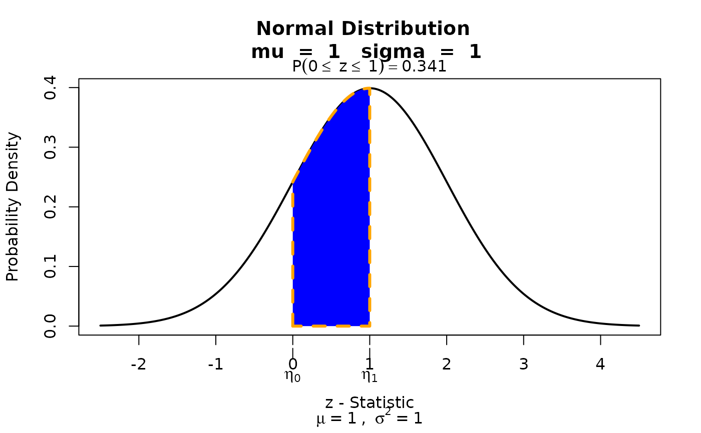

Graphing function for Continuous Distributions.
Source:R/visualize.continuous.R
visualize.continuous.RdHandles how continuous distributions are graphed. Users should not use this
function. Instead, users should use visualize.it().
Usage
visualize.continuous(dist, stat = c(0, 1), params, section = "lower")Arguments
- dist
contains a supported continuos distribution shortname.
- stat
a statistic to obtain the probability from. When using the "bounded" condition, you must supply the parameter as
stat = c(lower_bound, upper_bound). Otherwise, a simplestat = desired_pointwill suffice.- params
A list that must contain the necessary parameters for each distribution. For example,
params = list(mu = 1, sd = 1)would be for a normal distribution with mean 1 and standard deviation 1. If you are not aware of the parameters for the distribution, consider using thevisualize.dist_name functions listed under the "See Also" section.- section
Select how you want the statistic(s) evaluated via
section=either"lower","bounded","upper", or"tails"
Examples
# Function does not have dist look up, must go through visualize.it
visualize.it(dist='norm', stat = c(0,1), params = list(mu = 1, sd = 1), section = "bounded")
